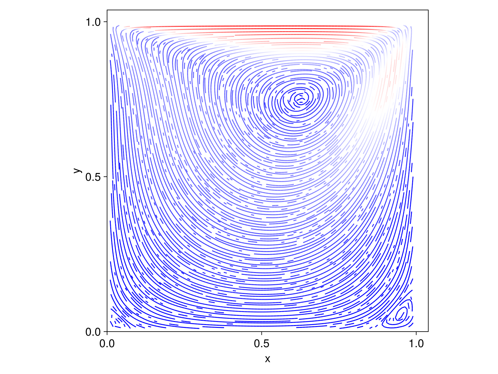

Ongoing
Tools: Python, PyTorch

Streamlines of a lid-driven cavity. The top wall moves, a large recirculation fills the box, and a smaller vortex sits in the lower-right corner.
I am studying how a physics-informed neural network trained on one fluid problem can be reused on another. The case in the figure is the lid-driven cavity: flow in a square box whose top wall slides. It is a small benchmark, and it already has the structure I care about, a primary vortex plus a weaker corner vortex.
A PINN represents the velocity and pressure with a neural network. Training asks that field to satisfy the Navier-Stokes equations and the boundary conditions of the problem. The result is tied to one geometry, one boundary condition, and one Reynolds number.
The project is about transfer. I want to know how much of a trained network still helps when one of those pieces changes, and what has to be learned again. The cavity is the case I am using while I work that out in Python and PyTorch.